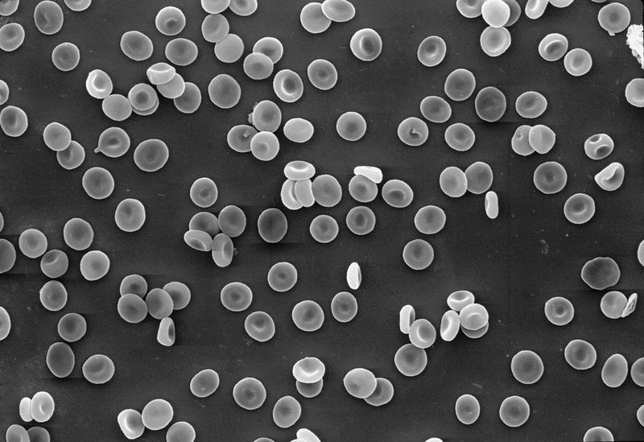
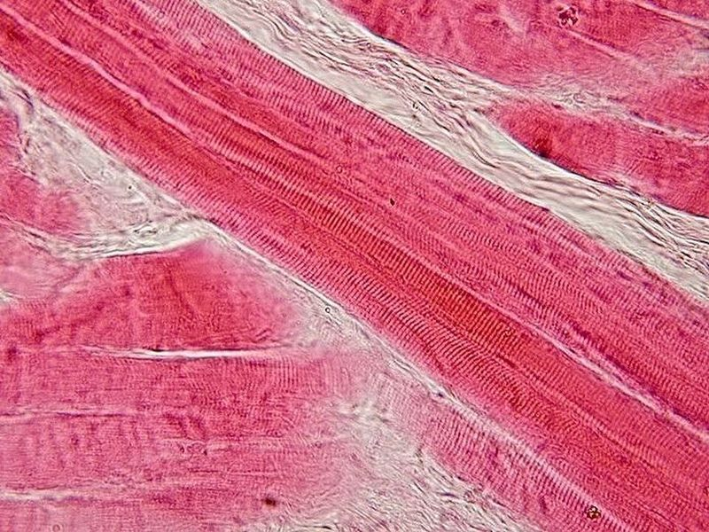
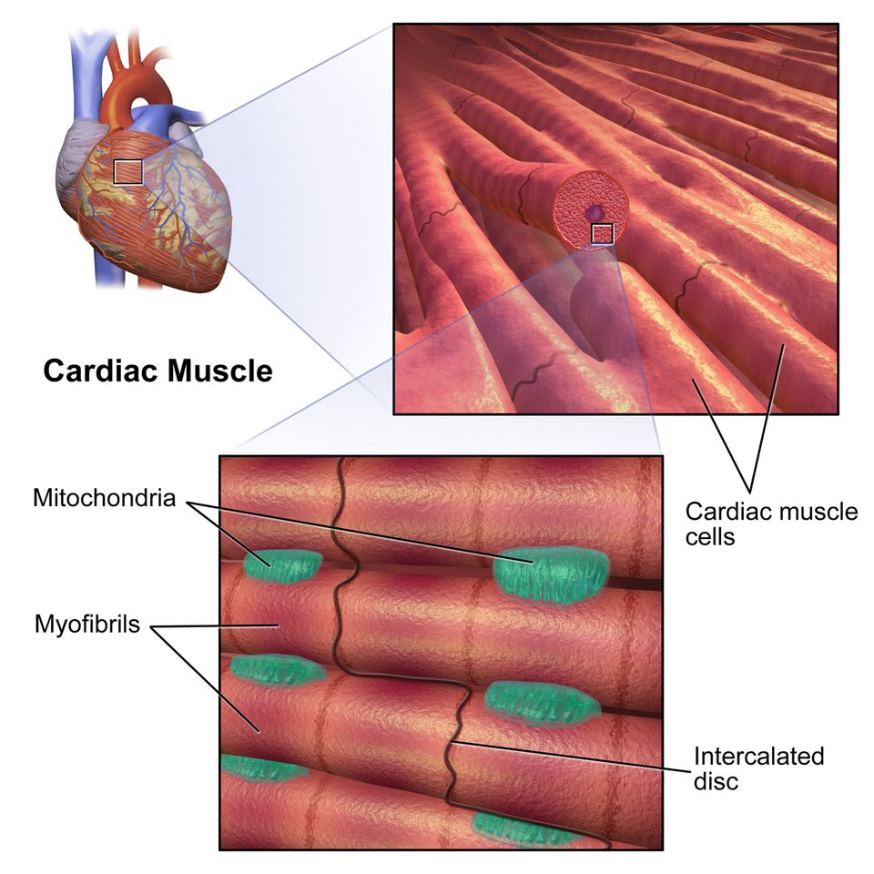
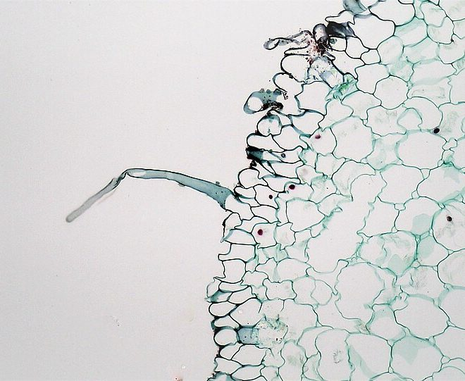

1.2 How Are Cells Adapted to Their Functions?
Name: ______________________ Class: ________ Date: ____________
📄 Download printable version (PDF)
Learning outcome
- Explain how the structures of specialised cells are adapted to their functions (e.g. muscle cell: many mitochondria to supply more energy; root hair cell: large surface area of cell membrane for greater absorption; red blood cell: lack of nucleus allowing it to transport more oxygen).
Why are cells specialised?
In a large organism, different cells do different jobs. A specialised cell has a structure that is adapted (suited) to its function. Each one still has the usual cell parts, but some parts are changed, added or lost.
Key idea: for every adaptation, say what the feature is and how it helps the cell do its job.
Surface area to volume ratio
Substances such as oxygen, water and mineral salts enter a cell through its surface (the cell membrane). The more surface a cell has for its size, the faster it can take substances in. We compare cells using the surface area to volume ratio (SA : V).
Try it: same volume, different shapes
Each shape is built from the same 64 small cubes (volume = 64 units³). Pick a shape and look at how much surface it has.
Same volume, but the flatter or longer and thinner the shape, the larger the surface area. That is why a red blood cell is a flattened disc and a root hair cell has a long, narrow extension.
Try it: cut a big cube into small cubes
Start with one 3 cm cube. Cut it into 1 cm cubes. The total volume stays the same, but look what happens to the surface.
Link to cells: a large organism is made of many small cells rather than one huge cell. Each small cell has a large SA : V ratio, so substances can enter and leave it quickly enough.
Experiment: diffusion into agar cubes of different sizes
- Make agar containing an alkali and phenolphthalein indicator. It is pink because it is alkaline.
- Cut cubes of side 1 cm, 2 cm and 3 cm.
- Place them in dilute hydrochloric acid. As the acid diffuses into the agar, the indicator turns colourless.
- Every few minutes, take the cubes out and cut them in half to see how far the acid has reached.
Run the experiment: press Play, or drag the time slider. You are looking at each cube cut in half: still pink (no acid yet), colourless (acid has diffused in).
| Cube side | Surface area | Volume | SA : V | Time to turn fully colourless* |
|---|---|---|---|---|
| 1 cm | 6 cm² | 1 cm³ | 6 : 1 | 5 min |
| 2 cm | 24 cm² | 8 cm³ | 3 : 1 | 10 min |
| 3 cm | 54 cm² | 27 cm³ | 2 : 1 | 15 min |
*In this simple model the acid moves 1 mm into the agar every minute from every face. Real times depend on the acid and the agar, and diffusion slows down as it goes deeper, but the pattern is the same.
Conclusion: the smallest cube has the largest SA : V ratio, so the whole of its volume is reached by diffusion first. The bigger the cube, the longer the acid takes to reach its centre.
Red blood cell
A red blood cell. Function: transports oxygen around the body.

Image: David Gregory & Debbie Marshall, CC BY 4.0, Wellcome Collection.
| Adaptation | How it helps |
|---|---|
| Contains haemoglobin | Haemoglobin binds to oxygen, so the cell can carry oxygen around the body. |
| Circular, biconcave shape | Increases the surface area to volume ratio, so oxygen is taken in and released faster. |
| No nucleus | More space to pack in haemoglobin, so it can transport more oxygen. |
| Flexible | It can squeeze through narrow blood capillaries. |
Muscle cell
A muscle cell. Function: contracts and relaxes to bring about movement.

Image: Department of Histology, Jagiellonian University Medical College, CC BY-SA 3.0, via Wikimedia Commons.


Image: BruceBlaus (Blausen Medical), CC BY-SA 4.0, via Wikimedia Commons.

| Adaptation | How it helps |
|---|---|
| Contains many mitochondria | More aerobic respiration, so more energy is released for contraction. |
| Has contractile protein fibres | The fibres contract and relax to bring about movement. |
| Has many nuclei | Allows for cell division, growth and repair of the long cell. |
Root hair cell
A root hair cell. Function: absorbs water and mineral salts from the soil.

Image: Berkshire Community College Bioscience Image Library, CC0, via Wikimedia Commons.
.jpg){kind=link}
| Adaptation | How it helps |
|---|---|
| Long and narrow extension (the root hair) | Increases the surface area to volume ratio, so water and mineral salts are absorbed faster. |
| Cell sap in the vacuole has a lower water potential than the soil water | Water enters the root hair cell by osmosis. (You will learn about osmosis in Topic 2.) |
| No chloroplasts | It grows underground with no light, so chloroplasts would have no use. |
Writing about adaptations
Link the feature to its effect and the function:
Example: “A red blood cell has no nucleus, so there is more space for haemoglobin, so it can transport more oxygen.”
Try it: which cell has this adaptation?
Choose the cell for each feature.
Check your understanding
1. Why does a red blood cell have no nucleus?
2. Muscle cells contain many mitochondria. What is the reason?
3. How does the long extension of a root hair cell help the plant?
4. A cube-shaped cell has sides of 2 µm. Its surface area is 24 µm² and its volume is 8 µm³. Work out the surface area to volume ratio (as a number : 1).
5. The biconcave shape of a red blood cell…